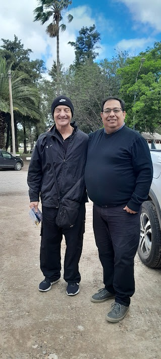
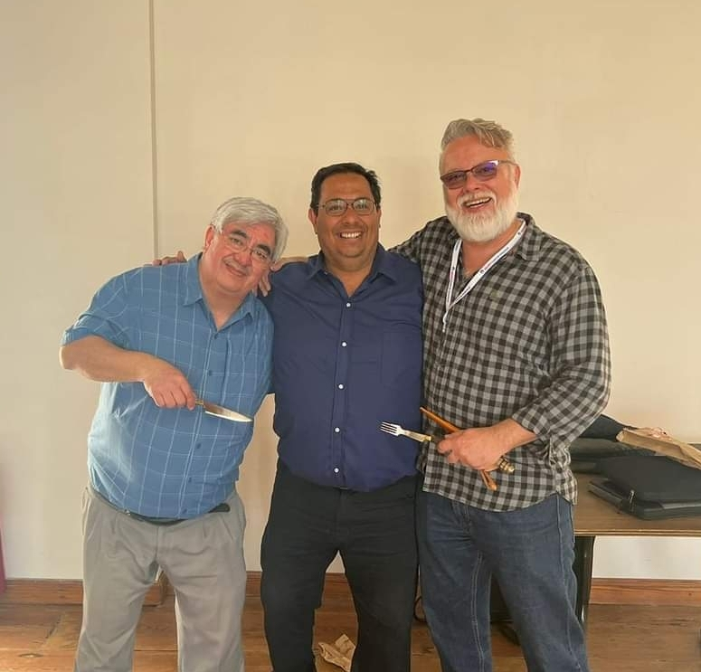
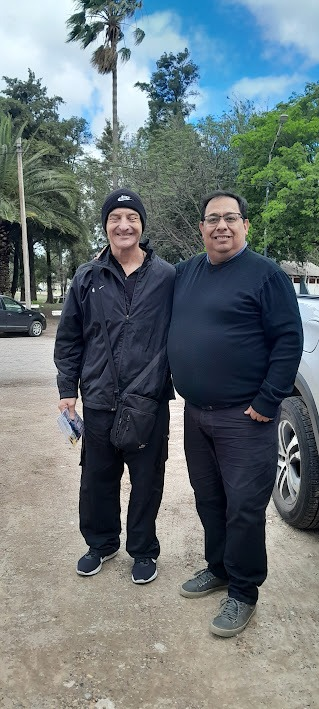
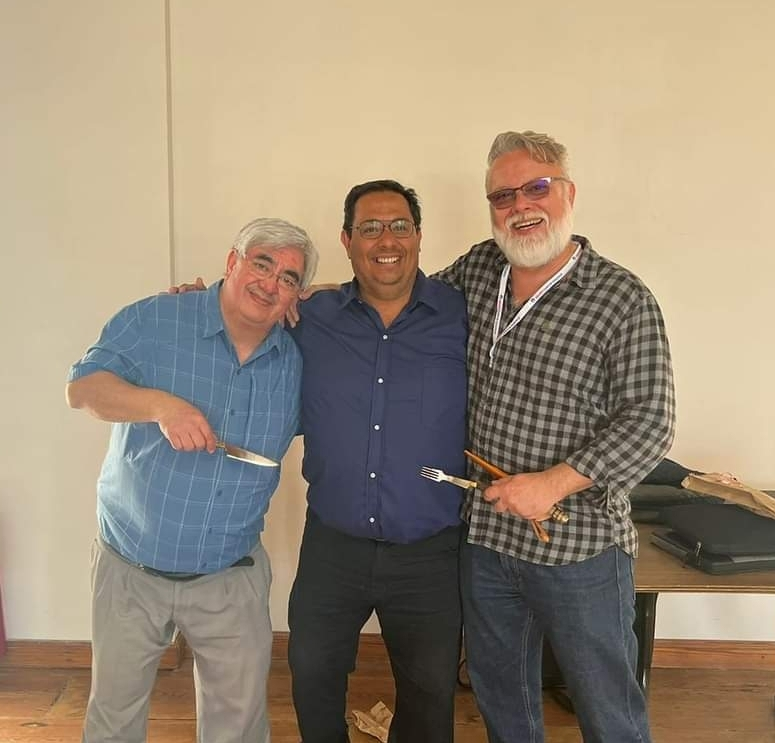

Experiencia en el Alto Rendimiento y la Educación
Llevamos los protocolos de liderazgo a figuras clave en el deporte de élite, la educación y los negocios, en escenarios de máxima exigencia.

 


